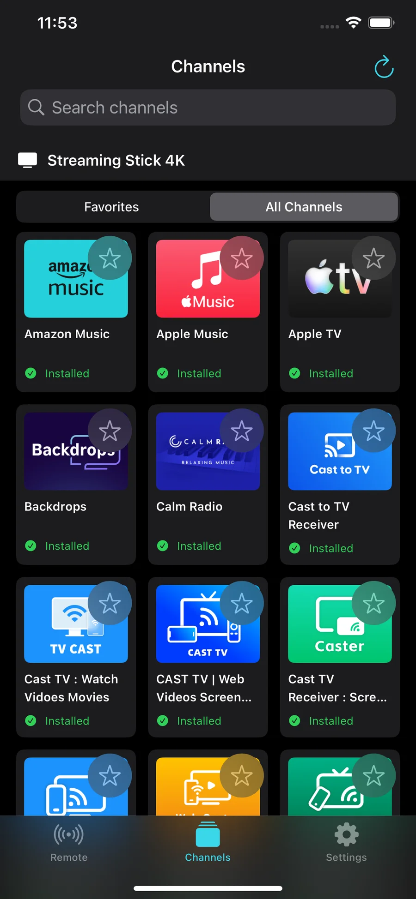
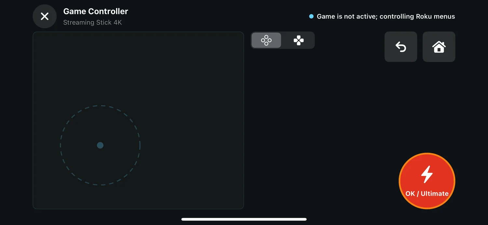

Button remote
Use directional navigation, OK, Back, Home, playback, options, volume and mute. Power and volume availability depends on the Roku model and connected TV.
REMOTE CONTROL FOR IPHONE AND IPAD
A focused remote for the way you actually use your TV: press familiar buttons, swipe across a touchpad, open installed channels, or switch to game controls.
Your iPhone or iPad and compatible Roku device must be connected to the same local network.
THREE WAYS TO CONTROL
Move from everyday navigation to gesture control or supported game input without leaving the same connected device.
Use directional navigation, OK, Back, Home, playback, options, volume and mute. Power and volume availability depends on the Roku model and connected TV.
Swipe left, right, up or down and tap to confirm. Haptic feedback helps each gesture feel deliberate without filling the screen with buttons.
Use a large movement area, quick actions, Back and Home in one view. The controller remains useful for Roku menus while supported game input is unavailable.
INSTALLED CHANNELS
Browse channel information reported by the connected device, search the list, and keep frequently used channels in Favorites. Game Controller does not claim to install unavailable channels or open a store page when Roku does not expose that action.

GAME MODE
Place movement under your left thumb and the primary action under your right. Switch control layouts, return to Roku Home, or go Back without leaving the controller.

LOCAL WHERE IT MATTERS
Device discovery and control requests travel directly between the app and the Roku you select. The app does not require an account and does not upload your device list, favorite channels, or remote command history to servers operated by us.
The app uses Google Mobile Ads and consent tools. Advertising partners may process advertising identifiers, general location derived from IP address, product interaction, diagnostics, and consent choices as explained in the policy.
See the complete Privacy PolicyFAQ
iOS requires permission before an app can discover and communicate with devices on your Wi-Fi network. Without it, Game Controller cannot find or control a Roku.
Confirm both devices use the same network, disable network isolation or guest Wi-Fi, and check that the Roku setting for control by mobile apps allows connections. Manual IP entry is available when discovery is blocked.
No. Game Controller launches channels reported as installed by your Roku. Roku software and device policies determine whether search, store, or installation actions are available.
No. The current product is focused on remote control, installed-channel shortcuts, favorites, and supported game controls.
No. Game Controller is an independent application and is not affiliated with, endorsed by, or sponsored by Roku, Inc.
LEGAL AND SUPPORT